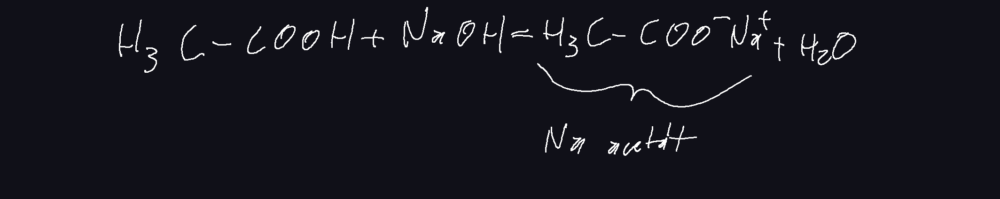
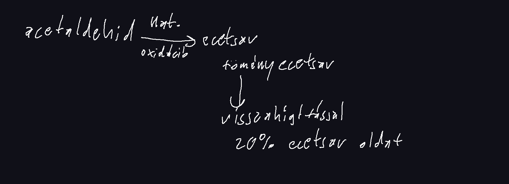
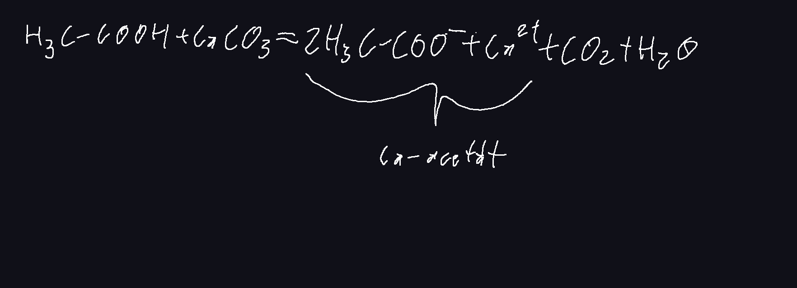
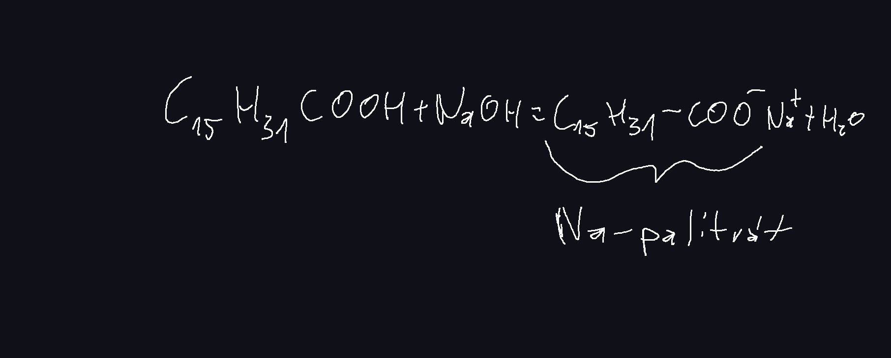
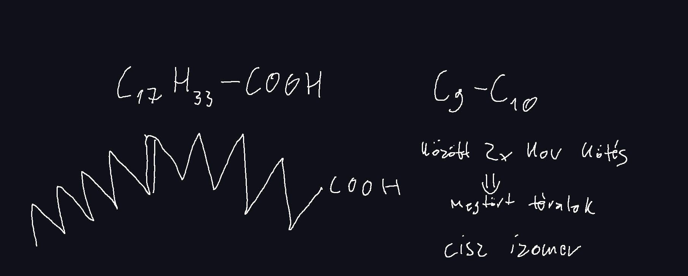
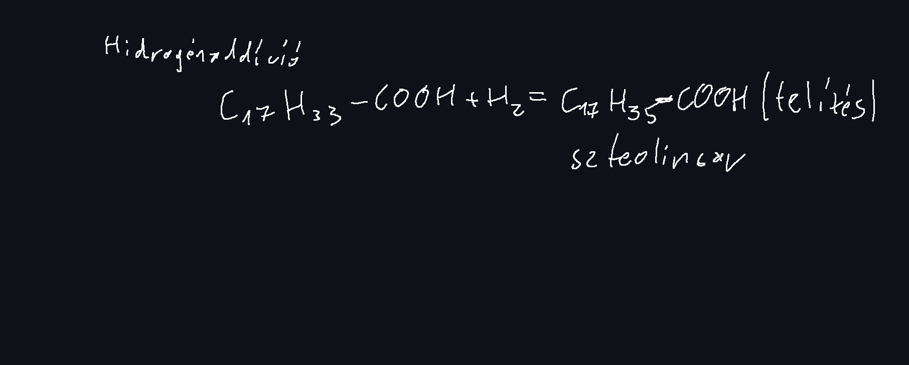

Ecetsav (Etánsav)
Szerkezet

- Poláris
-
H-kötések
dimerek
Fizikai tulajdonság
- színtelen szúrós szagu folyadék
- 17C szilárd, tűszerű folyadék -> jégecet, tömény ecetsav
- 118C forráspont (alkoholoktól, aldehidektől magasabb)
- korlátlanul oldódik vízben
Kémiai tulajdonság
Sav-bázis
Karbonsavak között erős sav
Közömbösítés
Reakció fémekkel

DE! A rézzel oxigén jelenlétében reagál, mérgező vegyület képződik
Előállítás
-
Erjedéssel
etil-alkohol -> Baktériumok -> ecetsav
Pl: bor ecetesedése
közvetlen
alma -> bakt -> ecetsav (almaecet)
5%-10% ecetsav állítható elő -
Szintetikusan

Felhasználás
- ételízesítés
- tartósítás
-
vízkőoldás

- műszálak előállítása
- gyógyszergyártás
Butánsav (vajsav)

- Színtelen, büdös folyadék
- emberi bőrőn erjesztő baktériumok révén képződhet (izzadságszag)
- zsír, vaj, szalonna avasodásakor képződik
Pentánsav (valeriánsav)

- színtelen, kellemetlen szagú folyadék
- macskagyökérben fordul elő -> nyugtató hatás
- nőstény macskák termelik, kandúrok megérzik
Palmitinsav
-
Nagy szénatomszámú karbonsav - zsírsav
Fehér színű szilárd, viasz szerű -
Képlete:

Csak 1-szeres kovalens kötés a C atomok között -> telített zsírsav
vonal képlet:

Az apoláris szénhidrogénlánc érvényesül, karboxil csoport hatása kicsi, ezért vízben nem oldódnak. -
Sóképzés:

- Előfordulás: állati zsírokban
Sztearinsav
-
Nagy szénatomszámú karbonsav - zsírsav
Fehér színű szilárd, viasz szerű -
Képlete:

Csak 1-szeres kovalens kötés a C atomok között -> telített zsírsav
vonal képlet:
Az apoláris szénhidrogénlánc érvényesül, karboxil csoport hatása kicsi, ezért vízben nem oldódnak. -
Sóképzés:
Szteártok - Előfordulás: állati zsírokban
Akrilsav
- Telítetlen karbonsav
-
Szerkezete:

-
Tulajd:
színtelen, szúrós szagu folyadék - Addícíó és polimerizáció
-
Jelentőssége: akrilsav -> metakrilsav -> (polimerizáció) -> plexi
Plexi: kemény átlátszó műanyag, nem olyan törékeny, mint az üveg, de könnyen karcolódik
Olajsav
- Nagy szénatomszámú telítetlen karbonsav -> telítetlen zsírsavak
-
Szerkezete:
 -
Tulajdonságai:
- Színtelen nagy viszkozitású folyadék
- Nagy apoláris szénhidrogénlánc miatt vízben nem oldódik
-
Addícióra képes

Kimutatás

margaringyártás
növényi olajok, olajsav (foly) -> (hidrogénezéssel katalizátor (Ni)) -> margarin szteorinsav (szil) -
Sóképzés

- Jelentősség növényi olajokban